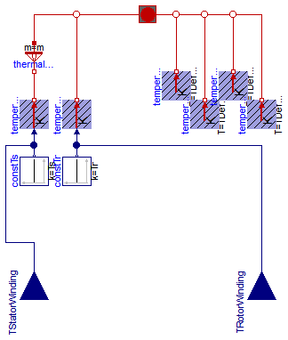
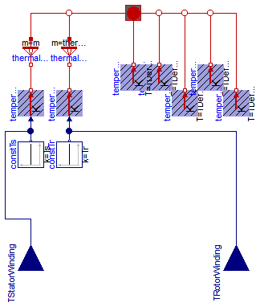

Extends from Modelica.Icons.VariantsPackage (Icon for package containing variants).
| Name | Description |
|---|---|
| ThermalAmbientAIMC | Thermal ambient for asynchronous induction machine with squirrel cage |
| ThermalAmbientAIMS | Thermal ambient for asynchronous induction machine with slipring |

Extends from Machines.Interfaces.InductionMachines.PartialThermalAmbientInductionMachines (Partial thermal ambient for induction machines).
| Type | Name | Default | Description |
|---|---|---|---|
| Integer | m | 3 | Number of phases |
| Boolean | useTemperatureInputs | false | If true, temperature inputs are used; else, temperatures are constant |
| Temperature | Ts | Temperature of stator windings [K] | |
| Temperature | Tr | Temperature of rotor (squirrel cage) [K] |
| Type | Name | Description |
|---|---|---|
| input RealInput | TStatorWinding | Temperature of stator windings |
| input RealInput | TRotorWinding | Temperature of squirrel cage |
model ThermalAmbientAIMC
"Thermal ambient for asynchronous induction machine with squirrel cage"
extends Machines.Interfaces.InductionMachines.PartialThermalAmbientInductionMachines
(redeclare final Machines.Interfaces.InductionMachines.ThermalPortAIMC thermalPort);
parameter Modelica.SIunits.Temperature Tr(start=TDefault)
"Temperature of rotor (squirrel cage)";
output Modelica.SIunits.HeatFlowRate Q_flowRotorWinding = temperatureRotorWinding.port.Q_flow
"Heat flow rate of rotor (squirrel cage)";
output Modelica.SIunits.HeatFlowRate Q_flowTotal=
Q_flowStatorWinding + Q_flowRotorWinding + Q_flowStatorCore + Q_flowRotorCore + Q_flowStrayLoad + Q_flowFriction;
Modelica.Thermal.HeatTransfer.Sources.PrescribedTemperature temperatureRotorWinding;
Modelica.Blocks.Interfaces.RealInput TRotorWinding if
useTemperatureInputs
"Temperature of squirrel cage";
Modelica.Blocks.Sources.Constant constTr(final k=Tr) if not useTemperatureInputs;
equation
connect(constTr.y, temperatureRotorWinding.T);
connect(temperatureRotorWinding.port, thermalPort.heatPortRotorWinding);
connect(TRotorWinding, temperatureRotorWinding.T);
end ThermalAmbientAIMC;

Extends from Machines.Interfaces.InductionMachines.PartialThermalAmbientInductionMachines (Partial thermal ambient for induction machines).
| Type | Name | Default | Description |
|---|---|---|---|
| Integer | m | 3 | Number of phases |
| Boolean | useTemperatureInputs | false | If true, temperature inputs are used; else, temperatures are constant |
| Temperature | Ts | Temperature of stator windings [K] | |
| Temperature | Tr | Temperature of rotor windings [K] |
| Type | Name | Description |
|---|---|---|
| input RealInput | TStatorWinding | Temperature of stator windings |
| input RealInput | TRotorWinding | Temperature of rotor windings |
model ThermalAmbientAIMS
"Thermal ambient for asynchronous induction machine with slipring"
extends Machines.Interfaces.InductionMachines.PartialThermalAmbientInductionMachines
(redeclare final Machines.Interfaces.InductionMachines.ThermalPortAIMS thermalPort);
parameter Modelica.SIunits.Temperature Tr(start=TDefault)
"Temperature of rotor windings";
output Modelica.SIunits.HeatFlowRate Q_flowRotorWinding = temperatureRotorWinding.port.Q_flow
"Heat flow rate of rotor (squirrel cage)";
output Modelica.SIunits.HeatFlowRate Q_flowBrush = temperatureBrush.port.Q_flow
"Heat flow rate of brushes";
output Modelica.SIunits.HeatFlowRate Q_flowTotal=
Q_flowStatorWinding + Q_flowRotorWinding + Q_flowStatorCore + Q_flowRotorCore + Q_flowStrayLoad + Q_flowFriction + Q_flowBrush;
Modelica.Thermal.HeatTransfer.Sources.PrescribedTemperature temperatureRotorWinding;
Modelica.Blocks.Interfaces.RealInput TRotorWinding if
useTemperatureInputs
"Temperature of rotor windings";
Modelica.Blocks.Sources.Constant constTr(final k=Tr) if not useTemperatureInputs;
Modelica.Thermal.HeatTransfer.Components.ThermalCollector
thermalCollectorRotor(m=thermalPort.m);
Modelica.Thermal.HeatTransfer.Sources.FixedTemperature temperatureBrush(final T=
TDefault);
equation
connect(constTr.y, temperatureRotorWinding.T);
connect(thermalCollectorRotor.port_b, temperatureRotorWinding.port);
connect(thermalCollectorRotor.port_a, thermalPort.heatPortRotorWinding);
connect(temperatureBrush.port, thermalPort.heatPortBrush);
connect(TRotorWinding, temperatureRotorWinding.T);
end ThermalAmbientAIMS;